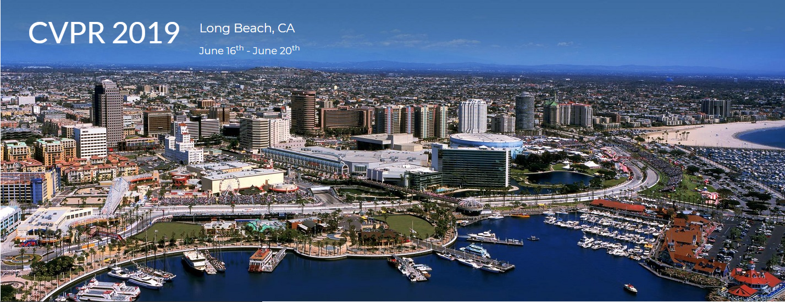

今日，国际计算机视觉与模式识别会议（CVPR）发布2019年会议录取榜单，我实验室3篇论文被大会接收！

第一篇论文是"Progressive Feature Alignment for Unsupervised Domain Adaptation"，由我实验室研究生二年级学生陈超奇、谢伟平与腾讯AI Lab 合作发表；第二篇论文是"A Variation Pan-Sharpening with Local Gradient Constraints", 由傅雪阳博士，二年级研究生林子煌同学等发表。第三篇文章是"Look More Than Once: An Accurate Detector for Text of Arbitrary Shapes"，由实验室研究生三年级学生梁柏荣和百度共同合作完成。
国际计算机视觉与模式识别会议（CVPR）是计算机视觉和模式识别领域国际顶级会议之一。在2018年发布的谷歌学术影响力（Google Scholar Metrics，GSM）排名中，CVPR排名全球所有学科（期刊与会议均参与排序）的第20位，在所有电子、计算机、信息类学科专业中排名最高，大会录用的论文代表着在计算机视觉与模式识别领域当今世界最先进水平。CVPR有着严苛的录用标准，据官方统计，今年的录用率仅为25%。在各种学术会议统计中，CVPR被认为有着很强的影响力和很高的排名。目前在中国计算机学会（CCF）推荐的国际学术会议列表中，CVPR被列为人工智能领域的A类会议。
更多关于论文的详细内容将会在接下来的更新中持续公布。
厦门大学SmartDSP实验室是一所专注于研究机器学习、模式识别、智能数据处理以及医学医疗影像处理与分析的团队。陈超奇和谢伟平曾在腾讯AI LAB机器学习组实习，梁柏荣2019年毕业后前往百度公司工作。